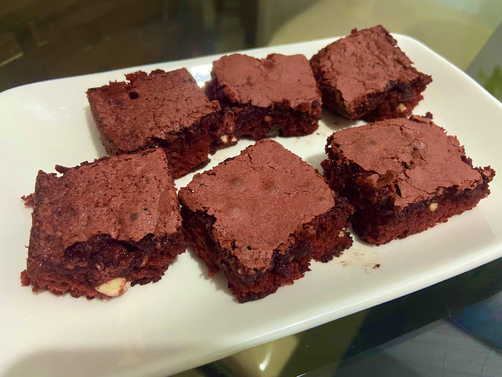

Brownie Red (Taylor's Version)

Receita de Brownie Red inspirado no álbum Red da Taylor Swift ❤️
Ingredientes
- 2 xícaras de farinha de trigo (sem fermento)
- 2 xícaras de açúcar refinado
- 2 colheres de sopa de cacau em pó
- 1 colher de sopa de essência de baunilha
- 1 colher de chá de corante vermelho
- 10 colheres de sopa de manteiga
- 3 xícaras de chocolate meio amargo em barra
- 1 xícara de castanha
- 1 pitada de sal
- 4 ovos
Modo de preparo
-
Coloque na batedeira o açúcar, os ovos e o sal. Bata até o açúcar se
dissolver por completo.
-
Adicione a farinha, o cacau em pó, o corante e a essência de baunilha.
Bata até ficar uniforme.
- Pré-aqueça o forno a 180 graus.
-
Derreta a manteiga e ainda quente misture com 2 xícaras de chocolate
em barra para que ele derreta também.
-
Misture o chocolate e a manteiga com a massa que está na batedeira.
Bata até ficar uniforme.
-
Triture a castanha e a xícara restante de chocolate em barra em
seguida adicione na massa e misture com o auxílio de uma colher de
pau.
- Unte a forma com manteiga e cacau em pó.
- Leve ao forno a 180º por 20 minutos.
- Retire do forno e espere esfriar para cortar.
Informações adicionais
Delicie-se com seu Brownie Red e não esqueça de colocar sua música
favorita do Red(Taylor's Version) para tocar!!!
❤️